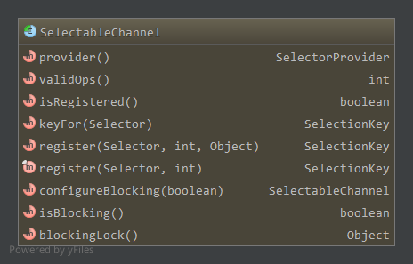

Java NIO提供了通道,缓冲区,选择器，字符集等多项特性。缓冲区另见Java NIO—缓冲区。
Java NIO的通道类似于流，不同点在于:
- 通道支持双向的数据读写，但流通常是单向的；
- 通道支持异步操作，流只能是同步的；
- 通道的读写基于块(使用缓冲区)，而流基于字节。流一个字节一个字节按顺序传输数据，虽然也可以传输字节数组，但流概念要求一次传送一个字节。
而通道的数据传输基于NIO的Buffer，一次读写一个缓冲区的数据。
Java NIO中比较重要的通道实现有:
- FileChannel,对应文件读写
- DataGramChannel,对应UDP数据读写
- SocketChannel,对应TCP连接数据读写
- ServerSocketChannel，对应TCP服务器端用于监听的Socket通道，accept时创建用于读写的SocketChannel
类图如下：
Channel
Channel是顶层接口，代表实体上一个打开的连接，实体可以为硬件设备,文件,网络套接字Socket或者一个能够执行不同I/O操作的程序部件。
通道要么是打开的要么是关闭的，通道在创建时打开，一旦关闭后维持关闭状态。如果往一个已经关闭的通道上执行I/O操作，将会抛出ClosedChannelException。
主要有两个方法，isOpen和close1
2
3
4public interface Channel extends Closeable {
public boolean isOpen();
public void close() throws IOException;
}
InterruptibleChannel
InterruptibleChannel可以异步关闭和中断。
实现该接口的通道异步可关闭，所谓异步可关闭是指：如果一个线程阻塞在一个实现了该接口通道的I/O操作上，那么其他线程可以调用通道的close方法，
这将导致阻塞的线程收到一个AsynchronousCloseException异常。
实现该接口的通道也是可中断的，这意味着：如果一个线程阻塞在一个实现了该接口通道的I/O操作上，那么其他线程可以调用阻塞线程的interrupt方法，
这将导致通道关闭，阻塞的线程收到一个ClosedByInterruptException，阻塞线程的中断状态被设置。
如果一个线程的中断状态被设置了，且它执行了通道上的阻塞I/O操作，那么通道将关闭，该线程收到ClosedByInterruptException异常，并维持中断
已设置的状态。1
2
3public interface InterruptibleChannel extends Channel{
public void close() throws IOException;
}
AbstractInterruptibleChannel是InterruptibleChannel的基本实现。
SelectableChannel
可以被选择器Selector复用的通道。
为了使用选择器，该类的实例必须先调用register方法进行注册，该方法返回一个SelectionKey对象，表示该通道注册了一个选择器。
通道一旦注册了一个选择器，它将维持注册状态直到被取消注册，这涉及到释放选择器给通道分配的所有资源。
一个通道不能直接取消和选择器的注册，而是通过关联键(SelectionKey)的取消来取消注册。键取消后在选择器下一次选择时通道取消在该选择器上的注册。
键可以通过调用该键的cancel方法显示地取消。当一个通道关闭时，该通道对应的键隐式地全部取消，而通道的关闭或者通过调用通道的close方法，
或者通过中断一个阻塞在该通道上执行I/O操作的线程来完成。
如果选择器关闭，那么相应的通道将被取消注册，对应的键也立刻变得无效。
一个通道最多在一个选择器上注册一次，可以通过isRegistered方法来判断该通道是否在一个或多个选择器上已经注册了。
可选择通道可以被多个线程安全的访问。
SelectableChannel含有以下方法:

其中provider返回一个SelectorProvider，用于打开相应的通道。validOps返回通道支持的操作，注册选择器。isRegistered判断是否已经注册了一个或多个选择器。keyFor(Selector)返回在指定选择器上注册后关联的SelectionKey。register方法在指定选择器上注册，第二个参数对应上面的validOps，即支持的操作，而第三个参数为绑定到SelectionKey上的附件。configureBlocking(boolean)配置该通道阻塞或非阻塞模式。isBlocking获取通道当前的模式。blockingLock获取用在register和configureBlocking两个方法中同步用的锁。
AbstractSelectableChannel作为SelectableChannel的基本实现。
定义了处理通道注册，取消注册，关闭的方法；维护了通道目前的阻塞模式以及目前SelectionKey键的集合。
FileChannel
FileChannel是抽象类，只有一个实现类FileChannelImpl,打开的文件通道都是FileChanenlImpl。
可以通过文件通道读写文件，不过文件通道不像Socket通道可以工作在非阻塞模式下一样，文件通道只能工作在阻塞模式下。
打开和关闭
<通道打开>
使用文件通道前，必须先打开它。可以通过FileInputStream,FileOutputStream,RandomAccessFile的getChannel方法打开一个文件通道。
三者都是通过FileChannelImpl的open方法打开指定文件描述符FileDescriptor的文件通道，打开时设置相应读写访问属性。
RandomAccessFile也是NIO中的一个特性，支持随机访问文件的读写操作
一个随机访问文件像是一个存储在文件系统中的大的字节数组，有一个叫做文件指针(file pointer)的字节数组索引。
当对随机访问文件进行读写时，从文件指针处开始，并增加相应的读写值。
写数据时，若到达字节数组的尾端，会造成字节数组扩展。
读数据时，读取到文件尾没有读到想要大小的数据，抛出EOFException异常。其他的读取错误抛出除EOFException之外的IOException异常，
关闭时也可能会抛出IOException异常。
文件指针可以通过getFilePointer方法获得，通过seek方法设置1
2
3
4
5
6
7
8
9public native long getFilePointer() throws IOException;
public void seek(long pos) throws IOException {
if (pos < 0) {
throw new IOException("Negative seek offset");
} else {
seek0(pos);
}
}
private native void seek0(long pos) throws IOException;
RandomAccessFile的相关类图如下:
实现了DataInput和DataOutput接口，相应的有read*系列数据读取方法和write*系列的写数据方法。
<通道关闭>
通道使用完后需要关闭1
public final void close() throws IOException
数据读写
打开了文件通道FileChannel后，便可执行Channel的数据读写方法了，ByteBuffer另见Java NIO—缓冲区
<数据读>
从文件通道中读取数据至ByteBuffer缓冲中，对应的ByteBuffer缓冲执行相应的put操作。1
2
3
4
5
6public abstract int read(ByteBuffer dst) throws IOException;
public abstract long read(ByteBuffer[] dsts, int offset, int length) throws IOException;
public final long read(ByteBuffer[] dsts) throws IOException {
return read(dsts, 0, dsts.length);
}
public abstract int read(ByteBuffer dst, long position) throws IOException;//从文件中指定位置position处开始读
<数据写>
将指定ByteBuffer中的数据写到文件通道中，对应的ByteBuffer执行相应的get操作。1
2
3
4
5
6public abstract int write(ByteBuffer src) throws IOException;
public abstract long write(ByteBuffer[] srcs, int offset, int length) throws IOException;
public final long write(ByteBuffer[] srcs) throws IOException {
return write(srcs, 0, srcs.length);
}
public abstract int write(ByteBuffer src, long position) throws IOException;//写到文件中指定位置position处
其他操作
position
1
2
3
4
5//获取文件当前位置
public abstract long position() throws IOException;
//设置文件当前位置。newPosition大于文件大小是合法的，但不改变文件大小。之后从该位置读取数据时，将显示到达文件尾(EOFException)。而写数据
//将造成文件大小的增长，而之"前文件尾～最新位置"这段数据是未定义的。
public abstract FileChannel position(long newPosition) throws IOException;size
1
2//文件通道关联文件的大小
public abstract long size() throws IOException;truncate
1
2//截取文件。如果size小于文件大小，则将从size到文件尾的数据删除，即取"0~size-1"部分数据。而如果size大于等于文件大小，文件不做修改。
public abstract FileChannel truncate(long size) throws IOException;force
1
2//将通道里尚未写入磁盘的数据(缓冲区)写到磁盘中，metaData为true时，同时写入文件元信息(修改时间等)，不过这依赖于操作系统。
public abstract void force(boolean metaData) throws IOException;map
1
public abstract MappedByteBuffer map(MapMode mode, long position, long size) throws IOException;
映射文件的部分区域到内存中。文件区域映射到内存有三种方式:
- 只读，任何试图修改映射结果缓冲的操作将抛出
ReadOnlyBufferException异常，对应的mode为MapMode.READ_ONLY - 读/写，对映射结果缓冲的修改将导致文件修改，这个修改在其他程序对该文件的内存映射可能可见，也可能不可见，对应mode为
MapMode.READ_WRITE 私有，对映射结果缓冲的修改不会导致文件修改，这个修改在其他程序对该文件的内存映射中也不可见，而是会对这个修改的部分形成一个私有的拷贝缓冲
，对应的mode为MapMode.PRIVATE该方法返回的
MappedByteBuffer缓冲区，position为0，limit和capacity为映射的大小，mark未定义。该缓冲区以及其维持的映射将保持合法性，
直到它被垃圾回收。映射一旦建立，合法性将不依赖创建它的文件通道，就算文件通道关闭了，也不影响它的合法性。许多详细的内存映射文件本质上依赖于底层的操作系统因此时未定义的。
当请求映射的文件区域没有包含文件通道的所有内容时该方法的行为是未定义的。
当本进程或其他进程改变底层文件的内容或大小时，此缓冲区是否相应的改变是未定义的。
当改变该缓冲区时，改变传输到文件的速率是未定义的。对于大部分操作系统，当文件大小小于10几KB时，映射文件到内存中的代价要高于普通的read和write方法。处于性能考虑，一般只是映射大文件到内存中。
- 只读，任何试图修改映射结果缓冲的操作将抛出
SocketChannel
SocketChannel可以通过该类的open方法创建，而不能从一个随意已经存在的socket中创建。新创建的SocketChannel已经打开了但还没连接，在这种
没连接的socket通道中尝试进行I/O操作将抛出NotYetConnectedException异常。可以通过connect方法建立连接，一旦连接后，socket通道将维持
连接直到关闭。可以通过isConnected方法判断是否建立了连接。
Socket通道支持非阻塞的连接，非阻塞的connect方法会立刻返回，必须通过isConnected判断连接是否已经建立，或者通过finishConnect方法在
非阻塞套接字上阻塞等待连接成功。可以通过isConnectionPending方法来判断连接建立过程是否正在处理。而非阻塞的read方法，在Socket上没有
数据的时候，立即返回(0)，不会等待。非阻塞的accept，如果没有等待的连接，将返回null。
Socket选项可通过setOption方法设置，SocketChannel支持以下选项，都是java.net.StandardSocketOptions类型:
SO_SNDBUF,socket发送缓冲大小SO_RCVBUF,socket接收缓冲大小SO_KEEPALIVE，socket保活选项，另见Socket选项SO_REUSEADDRf重用地址，重用已经关闭的处于TIME_WAIT状态下的socket地址SO_LINGER，linger选项，设置close行为，另见Socket 选项TCP_NODELAY,取消Nagle算法。Nagle算法启动时，小包到达时会等待一段时间，尽量积累更多数据一起发送。
SocketChannel支持并发访问。
打开，连接
通过open方法打开一个SocketChannel1
2
3
4
5
6
7
8
9
10
11
12
13
14
15
16
17//打开一个SocketChannel，还未连接
public static SocketChannel open() throws IOException
//连接至远程地址。如果是非阻塞模式，连接建立返回true，否则返回false，需要通过finishConnect等待连接建立。如果是阻塞模式，则会一直阻塞直到连接建立
public abstract boolean connect(SocketAddress remote) throws IOException;
//非阻塞模式等待连接建立
public abstract boolean finishConnect() throws IOException;
//建立连接过程是否在进行
public abstract boolean isConnectionPending();
//判断连接是否已经建立
public abstract boolean isConnected();
//打开一个SocketChannel，并连接至远端地址
public static SocketChannel open(SocketAddress remote)
关闭
close继承父类，SocketChannel中可以单独关闭输入或输出1
2
3
4
5//关闭连接的读操作，并没有关闭该通道，关闭后接下来的read操作将返回-1
public abstract SocketChannel shutdownInput() throws IOException;
//关闭连接的写操作，并没有关闭该通道，关闭后接下来的write操作将抛出ClosedChannelException异常
public abstract SocketChannel shutdownOutput() throws IOException;
数据读
从socket通道中读取数据到缓冲区中1
2
3
4
5public abstract int read(ByteBuffer dst) throws IOException;
public abstract long read(ByteBuffer[] dsts, int offset, int length) throws IOException;
public final long read(ByteBuffer[] dsts) throws IOException {
return read(dsts, 0, dsts.length);
}
数据写
将缓冲区中数据写到通道中1
2
3
4
5public abstract int write(ByteBuffer src) throws IOException;
public abstract long write(ByteBuffer[] srcs, int offset, int length) throws IOException;
public final long write(ByteBuffer[] srcs) throws IOException {
return write(srcs, 0, srcs.length);
}
选择器相关
见上父类SelectableChannel，以下为SelectableChannel中方法
注册选择器
1
2
3
4
5public final SelectionKey register(Selector sel, int ops) throws ClosedChannelException{
return register(sel, ops, null);
}
public abstract SelectionKey register(Selector sel, int ops, Object att) throws ClosedChannelException;
public abstract boolean isRegistered();获取与指定选择器关联的SelectionKey
1
public abstract SelectionKey keyFor(Selector sel);
阻塞/非阻塞模式配置
以下为父类SelectableChannel中方法1
2public abstract SelectableChannel configureBlocking(boolean block) throws IOException;
public abstract boolean isBlocking();
其他
1 | public abstract Socket socket();//返回与该通道关联的socket对象 |
ServerSocketChannel
ServerSocketChannel通过调用该类的open方法创建，不能从任意一个已经存在的ServerSocket中创建ServerSocketChannel。新创建的ServerSocketChannel
已经打开但还未绑定，尝试对未绑定的ServerSocketChannel调用accept方法将抛出NotYetBoundException异常。可以通过bind方法绑定。
可以通过setOption方法配置选项，ServerSocketChannel支持以下选项:
- SO_RCVBUF，socket的接受缓冲大小
- SO_REUSEADDR，重用地址
支持多线程并发访问
相关方法
创建一个ServerSocketChannel
1
public static ServerSocketChannel open() throws IOException
绑定到本地地址
1
2
3
4public final ServerSocketChannel bind(SocketAddress local) throws IOException{
return bind(local, 0);
}
public abstract ServerSocketChannel bind(SocketAddress local, int backlog) throws IOException;其中
backlog为最大等待连接socket的数量accept
1
public abstract SocketChannel accept() throws IOException;
如果通道工作在非阻塞模式，该方法在没有等待连接时立刻返回null。阻塞模式下一直阻塞直到有连接到达。
不管本ServerSocketChannel工作在什么模式，返回的SocketChannel工作在阻塞模式。获取本地地址
1
public abstract SocketAddress getLocalAddress() throws IOException;
设置socket选项
1
public abstract <T> ServerSocketChannel setOption(SocketOption<T> name, T value) throws IOException;
支持的选项见上
返回关联的ServerSocket
1
public abstract ServerSocket socket();
支持的操作
1
2
3public final int validOps() {
return SelectionKey.OP_ACCEPT;
}ServerSocketChannel只支持accept操作，注册选择器，建立连接后accept返回SocketChannel，进行数据的读写。
配置成非阻塞模式
1
public final SelectableChannel configureBlocking(boolean block) throws IOException
父类方法
DatagramChannel
对应UDP通道。
DatagramChannel通过open方法创建，不能为任意的已经存在的数据报socket创建通道。
新创建的数据报Socket没有连接，当使用receive和send方法时不需要建立连接，而使用read和write方法时需要预先建立连接。
可以通过connect建立连接，建立连接后能够避免每次send或receive的安全检查负载。可以通过isConnected判断是否已经建立了连接。
可以通过setOption设置数据报socket选项，支持的选项有:
- SO_SNDBUF，发送缓冲区大小
- SO_RCVBUF，接受缓冲区大小
- SO_REUSEADDR,重用地址
- SO_BROADCAST，允许传输广播数据报
- IP_TOS,IP头部的TOS(Type of Service服务类型)字段
- IP_MULTICAST_IF，IP多播数据报的网络接口
- IP_MULTICAST_TTL，IP多播数据报的生存时间(TTL)
- IP_MULTICAST_LOOP，IP多播回环
支持多线程并发访问。
相关方法
打开
1
2
3
4
5
6public static DatagramChannel open() throws IOException {
return SelectorProvider.provider().openDatagramChannel();
}
public static DatagramChannel open(ProtocolFamily family) throws IOException {
return SelectorProvider.provider().openDatagramChannel(family);
}参数
family指定协议簇，当该通道用于IP多播时，该参数用于指定该通道要加入的多播组地址类型。数据操作
1
2
3
4
5
6
7
8
9
10
11
12
13
14
15//不需要建立连接
public abstract SocketAddress receive(ByteBuffer dst) throws IOException;
public abstract int send(ByteBuffer src, SocketAddress target) throws IOException;
//需要建立连接
public abstract int read(ByteBuffer dst) throws IOException;
public abstract long read(ByteBuffer[] dsts, int offset, int length) throws IOException;
public final long read(ByteBuffer[] dsts) throws IOException {
return read(dsts, 0, dsts.length);
}
public abstract int write(ByteBuffer src) throws IOException;
public abstract long write(ByteBuffer[] srcs, int offset, int length) throws IOException;
public final long write(ByteBuffer[] srcs) throws IOException {
return write(srcs, 0, srcs.length);
}如上对于
send和receive来说，不需要建立连接即可使用，而对于read和write来说需要建立连接才能使用。连接
1
2
3
4
5
6//建立连接
public abstract DatagramChannel connect(SocketAddress remote) throws IOException;
//取消连接
public abstract DatagramChannel disconnect() throws IOException;
//是否连接上
public abstract boolean isConnected();其他
1
2
3
4
5
6
7
8
9
10
11
12
13
14
15
16
17
18
19//绑定本地地址
public abstract DatagramChannel bind(SocketAddress local) throws IOException;
//获取本地地址
public abstract SocketAddress getLocalAddress() throws IOException;
//获取远端地址
public abstract SocketAddress getRemoteAddress() throws IOException;
//获取关联的数据报Socket
public abstract DatagramSocket socket();
//设置socket选项
public abstract <T> DatagramChannel setOption(SocketOption<T> name, T value) throws IOException;
//支持的操作，支持读/写
public final int validOps() {
return (SelectionKey.OP_READ | SelectionKey.OP_WRITE);
}
选择器Selector
一个SelectableChannel的多路转换器对象。
可以通过该类的open方法创建一个选择器，这将使用系统默认的选择器提供者(SelectorProvider)来创建新的选择器。选择器也可以通过一个具体的SelectorProvider的openSelector方法来创建。选择器创建后将一直维持打开状态直到调用close方法。
维护的集合
SelectableChannel在选择器上的注册通过SelectionKey来维护。选择器上维护了三个SelectionKey的集合:
所有当前注册的可选择通道对应的SelectionKey的集合，通过
keys方法返回，可以称之为选择器键集：1
public abstract Set<SelectionKey> keys();
有相应感兴趣事件发生的SelectionKey的集合，可以称之为选择器
已选择的键集，通过selectedKeys方法返回，是第一种集合的子集:1
public abstract Set<SelectionKey> selectedKeys();
SelectionKey已经取消的集合，不过此时对应的通道还没有取消注册(下一次选择操作时将取消注册),可以称之为选择器的
取消键集，是第一种集合的子集。
选择器刚创建时这三个集合为空集。
当通道注册在选择器上时，相应的键将添加至该选择器的键集中，当键取消时在选择操作中从键集中删除指定取消的键，不能自己修改键集。
当一个键被取消时(关闭对应的通道或调用键的cancel方法),添加至选择器的取消键集中，在下一次选择操作时，将从该选择器中所有键集中移除该键。
选择器的选择操作可以将一个键添加到已选择键集中，可以通过使用该集合的remove方法或集合迭代器的remove方法移除一个键，不能通过其他方式
从已选择键集中移除一个键(选择操作不会移除键)，也不能通过除选择操作之外的方式添加键到已选择键集中。
选择操作
选择操作通过select()，select(long),selectNow()方法调用，执行三个步骤:
取消键集中的每一个键从所有的集合中移除，同时关联的通道取消注册，这会将取消键值清空；- 底层操作系统查询维护的所有通道是否有其感兴趣的操作准备好发生，对每一个通道如果有任意一个其感兴趣的操作已经准备好发生，则执行以下两个操作:
a. 如果该通道对应的键没在已选择键集中则添加进去，然后它的已准备好操作集合修改成完全与操作系统通知的准备好操作相同，而先前已准备好集合
中任意记录的准备好信息将取消；
b. 否则，如果该通道对应的键已经在已选择键集中了，则已准备好操作集合修改为等于操作系统通知的新的准备好的操作，之前记录的信息保留，
即此时已准备好操作集合添加了新的准备好集合。
如果这一步开始所有注册键都没有相应的兴趣集，则已选择键集和键的已准备好操作集合都不会更新。 - 如果在第2步的处理过程中，有键添加到
取消键集中，那么添加的键直接按第1步方式处理。
而选择操作是否阻塞以及阻塞的时间长短，取决于上面三个方法。
并发
选择器能够在多线程下并发访问，不过维护的集合不能保证多线程访问的安全性。
选择操作选择器能够对键集,已选键集自行同步，而在上述选择操作的1,3两个步骤能够自行对取消键集保证同步。
在选择操作过程中对选择器键集中键的兴趣集进行改变不会影响当前的选择操作，这个改变要在下一次选择操作才能体现出来。
在任何时候键都可能被取消或通道可能被关闭，因此一个键存在在一个或多个选择器的键集中并不能意味着该键是合法的或者对应的通道是打开的。
如果其他线程可能取消一个键或关闭对应的通道，那么应用程序应该仔细的进行同步或者对相关条件进行必要性的检查。
阻塞在select()或select(long)方法上的线程可能被其他线程中断，有三种方式:
- 调用选择器的wakeup()方法；
- 调用选择器的close()方法；
- 调用阻塞线程的interrupt()方法，此时阻塞线程的中断状态被设置，选择器的wakeup()将被调用；
close方法在选择器和三个集合上的同步顺序和选择操作一样。
选择器的键集和已选键集通常不能被多个线程安全的并发访问，如果一个线程可能对这三个线程中任意一个做出直接修改，那么该访问应该在集合上做
同步控制。集合iterator方法返回的迭代器是快速失败的：如果集合在创建迭代器后做出了修改，除了调用迭代器自己的remove方法外的其他任何方式
都将抛出ConcurrentModificationException异常。
相关方法
如下:wakeup，如果有线程阻塞在选择操作上，则阻塞操作直接返回，而如果当前没有在执行选择操作的，下一次调用select()，select(long)方法将
直接返回，之后的选择操作执行正常流程。close，如果有线程阻塞在选择操作上，则阻塞线程被中断，就像调用了wakeup一样。所有没有取消的键变得不合法，对应的通道也被取消，相关资源被释放。
如果选择器已经被关闭了，则没有影响。已经关闭了的通道除了调用close和wakeup，其他操作将抛出ClosedSelectorException异常。
SelectionKey
前面介绍了很多，对应了通道和选择器的绑定，直接看支持的方法:channel和selector分别返回对应的通道和选择器。isValid，键只要创建便是合法的，直到它被取消，或者对应通道被关闭，或者选择器关闭。interestOps()和interestOps(int)方法用于获取和设置兴趣集，该方法是否阻塞以及阻塞时间的长短依赖于具体实现。readyOps返回键已准备好操作集合，支持的操作如下(读，写，连接，接收):1
2
3
4public static final int OP_ACCEPT = 1 << 4;
public static final int OP_CONNECT = 1 << 3;
public static final int OP_READ = 1 << 0;
public static final int OP_WRITE = 1 << 2;
isReadable,isWritable,isConnectable，isAcceptable分别对应是否可读，可写，可连接，可接收。attach(Object)设置绑定的附件，attachment()获取之前绑定的附件。